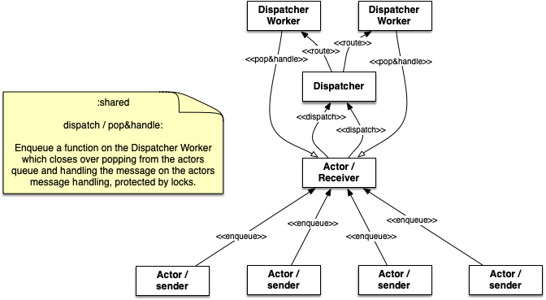
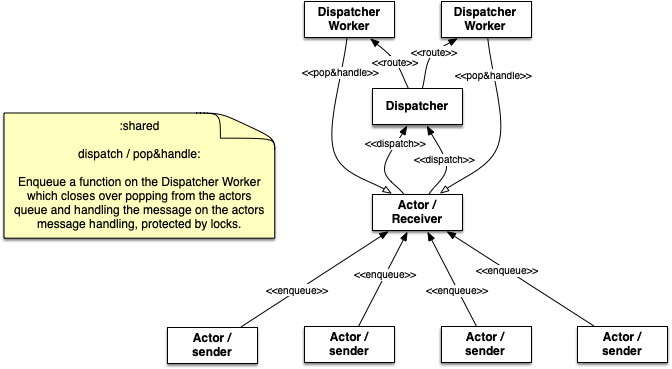
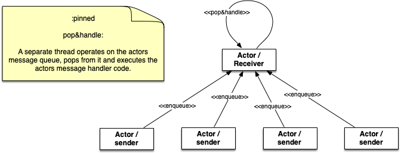
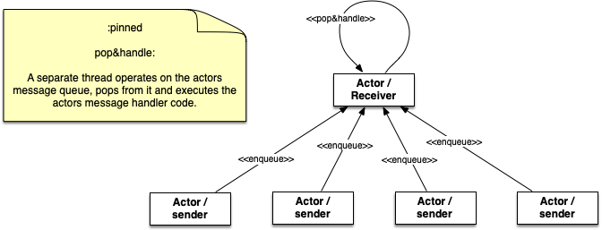
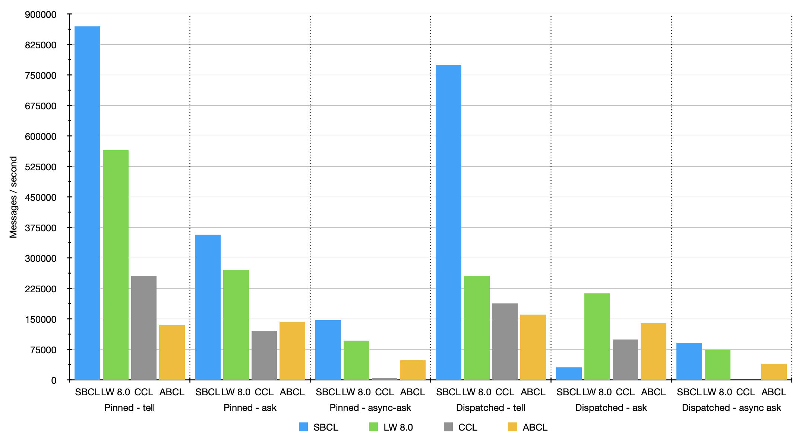
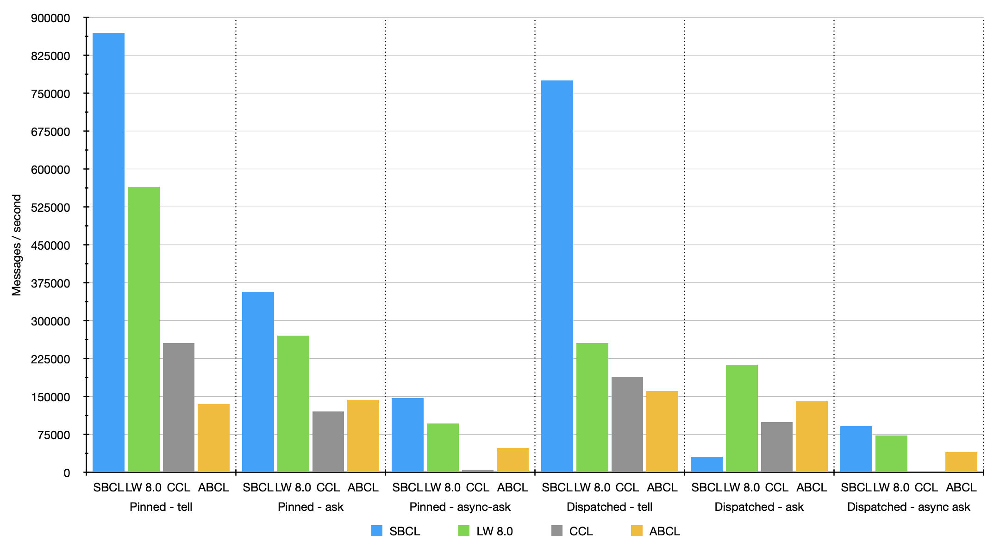

cl-gserver documentation
Table of Contents
- 1 Introduction
- 2 API documentation
[in package CL-GSERVER.DOCS]
1 Introduction
Introduction - Actor framework featuring actors and agents
cl-gserver is a 'message passing' library/framework with actors similar to Erlang or Akka. It supports creating systems that should work reactive, require parallel computing and event based message handling.
Version history
Version 1.8.0: hash-agent interface changes. Added array-agent.
Version 1.7.6: Added cl:hash-table based agent with similar API interface.
Version 1.7.5: Allow agent to specify the dispatcher to be used.
Version 1.7.4: more convenience additions for task-async (completion-handler)
Version 1.7.3: cleaned up dependencies. Now cl-gserver works on SBCL, CCL, LispWorks, Allegro and ABCL
Version 1.7.2: allowing to choose the dispatcher strategy via configuration
Version 1.7.1: added possibility to create additional and custom dispatchers. I.e. to be used with tasks.
Version 1.7.0: added tasks abstraction facility to more easily deal with asynchronous and concurrent operations.
Version 1.6.0: added eventstream facility for building event based systems. Plus documentation improvements.
Version 1.5.0: added configuration structure. actor-system can now be created with a configuration. More configuration options to come.
Version 1.4.1: changed documentation to the excellent mgl-pax
Version 1.4: convenience macro for creating actor. See below for more details
Version 1.3.1: round-robin strategy for router
Version 1.3: agents can be created in actor-system
Version 1.2: introduces a breaking change
ask has been renamed to ask-s.
async-ask has been renamed to ask.
The proposed default way to query for a result from another actor should
be an asynchronous ask. ask-s (synchronous) is
of course still possible.
Version 1.0 of cl-gserver library comes with quite a
few new features (compared to the previous 0.x versions).
One of the major new features is that an actor is not
bound to it's own message dispatcher thread. Instead, when an
actor-system is set-up, actors can use a shared pool of
message dispatchers which effectively allows to create millions of
actors.
It is now possible to create actor hierarchies. An actor can have child actors. An actor now can also 'watch' another actor to get notified about it's termination.
It is also possible to specify timeouts for the ask-s and
ask functionality.
This new version is closer to Akka (the actor model framework on the JVM) than to GenServer on Erlang. This is because Common Lisp from a runtime perspective is closer to JVM than to Erlang/OTP. Threads in Common Lisp are heavy weight OS threads rather than user-space low weight 'Erlang' threads (I'd like to avoid 'green threads', because threads in Erlang are not really green threads). While on Erlang it is easily possible to spawn millions of processes/threads and so each actor (GenServer) has its own process, this model is not possible when the threads are OS threads, because of OS resource limits. This is the main reason for working with the message dispatcher pool instead.
But let's jump right into it. I'll explain more later.
Getting hands-on
Creating an actor-system
To use the shared dispatcher pool we have to create an
actor-system first.
(defvar *system* (asys:make-actor-system))When we eval *system* in the repl we see a bit of the structure:
#<ACTOR-SYSTEM shared-workers: 4, user actors: 0, internal actors: 0>So the actor-system has by default four shared message
dispatcher workers. Depending on how busy the system tends to be this
default can of course be increased.
An optional configuration can be passed to the actor-system factory function. See API documentation.
Shutting down the system
Shutting down an actor system may be necessary depending on how it's used. It can be done by:
(ac:shutdown *system*)This will stop all dispatcher workers and all other actors that have been spawned in the system.
Creating actors
Actors kind of live within an actor-context. An
actor-context contains a collection (of actors) and defines a Common
Lisp protocol that defines a set of generic functions for creating, removing and finding actors in an actor-context.
There are two 'things' that host an actor-context. This
is:
- the
actor-system. Creating actors on theactor-systemwill create root actors. - the
actor. Creating actors on the context of an actor will create a child actor.
Let's create an actor.
(act:actor-of (*system* "answerer")
:receive
(lambda (self msg state)
(let ((output (format nil "Hello ~a" msg)))
(format t "~a~%" output)
(cons output state))))This creates a root actor on the *system*. Notice that the actor is not assigned to a variable. It is now registered in the system. The :receive key argument to the actor-of macro is a function which does the main message processing of an actor. The parameters to the 'receive' function are the tuple:
self- the instance of the actormsg- the received message of when this 'receive' function is calledstate- the current state of the actor
actor-of also allows to specify the initial state by using the :state key, a name, and a custom actor type. By default a standard actor of type 'actor is created. But you can subclass 'actor and specify your own. It is also possible to add 'after initialization' code using the :init key which takes a lambda with the actor instance as parameter.
The return value of the 'receive' function should also be familiar. It is the cons with car being sent back to sender (in case of ask/ask-s) and cdr set as the new state of the actor.
The actor-of macro still returns the actor as can be seen on the repl when this is executed. So it is of course possible to store the actor in a dynamic or lexical context. However, when the lexical context ends, the actor will still live as part of the actor context/system.
Here we see a few details of the actor. Among which is the name and also the type of message-box it uses. By default it is a message-box/dp which is the type of a shared message dispatcher message-box.
#<ACTOR answerer, running: T, state: NIL, message-box: #<MESSAGE-BOX/DP mesgb-9541, processed messages: 0, max-queue-size: 0, queue: #<QUEUE-UNBOUNDED #x3020029918FD>>>Had we stored the actor to a variable, say *answerer* we
can create a child actor of that by doing:
(act:actor-of (*answerer* "child-answerer")
:receive
(lambda (self msg state)
(let ((output (format nil "~a" "Hello-child ~a" msg)))
(format t "~a~%" output)
(cons output state))))This will create a new actor on the context of the parent actor. The
context can be specified with just the parent actor instance *answerer*.
Dispatchers :pinned vs. :shared
Dispatchers are somewhat alike thread pools. Dispatchers of the :shared type are a pool of workers. Workers are actors using a :pinned dispatcher. :pinned just means that an actor spawns its own mailbox thread.
So :pinned and :shared are types of dispatchers. :pinned spawns its own mailbox thread, :shared uses a worker pool to handle the mailbox messages.
By default an actor created using actor-of uses a :shared dispatcher type which uses the shared message dispatcher that is automatically setup in the system.
When creating an actor it is possible to specify the dispatcher-id. This parameter specifies which 'dispatcher' should handle the mailbox queue/messages.
Please see below for more info on dispatchers.
Finding actors in the context
If actors are not directly stored in a dynamic or lexical context they
can still be looked up and used. The actor-context protocol
contains a function find-actors which works like this:
(first (ac:find-actors
*system*
(lambda (actor) (string= "answerer"
(act-cell:name actor)))))find-actors takes as first parameter the actor context.
This can be either the actor system, or the context of an actor. The
second parameter is a test function. This example makes a string
comparison on the actor name. So the above function will output:
#<ACTOR answerer, running: T, state: NIL, message-box: #<MESSAGE-BOX/DP mesgb-9687, processed messages: 0, max-queue-size: 0, queue: #<QUEUE-UNBOUNDED #x30200263C95D>>>This function only does a simple flat search. The functionality of looking up an actor in the system generally will be expanded upon.
tell, ask-s and ask
Let's send some messages.
tell
tell is a fire-and-forget kind of send type. It
doesn't expect a result in return.
And because of that, and in order to demonstrate it does something,
it has to have a side-effect. So it dumps some string to the console
using format, because we couldn't otherwise tell if
the message was received and processed (see the
*answerer* actor definitions above).
CL-USER> (act:tell *answerer* "Foo")
T
CL-USER>
Hello FooSo we see that tell returns immediately with T. But
to see the 'Hello Foo' it takes another hit on the return key,
because the REPL is not asynchronous.
tell with sender
tell accepts a 'sender', which has to be an actor. So
we can do like this:
CL-USER> (act:tell *child-answerer* "Foo" *answerer*)
T
CL-USER>
Hello-child Foo
Hello Hello-child FooThis sends \"Foo\" to *child-answerer*, but *child-answerer*
sends the response to *answerer*. So we see outputs of both
actors.
ask-s
ask-s blocks until the message was processed by the
actor. This call returns the car part of the cons return of the
behavior function. Insofar an ask-s call is more
resource intensive than just a tell.
(act:ask-s *answerer* "Bar")Will respond with: 'Hello Bar'
ask
ask combines both ask-s and
tell. From ask-s it 'inherits' returning
a result, even though it's a future result. Internally it is
implemented using tell. In order to wait for a result a
temporary actor is spawned that waits until it receives the result
from the actor where the message was sent to. With this received
result the future is fulfilled. So ask is async, it
returns immediately with a future. That
future can be queried until it is fulfilled. Better is
though to setup an on-completed handler function on it.
So we can do:
(future:on-completed
(act:ask *answerer* "Buzz")
(lambda (result)
(format t "Received result: ~a~%" result)))Well, one step at a time:
(act:ask *answerer* "Buzz")Returns with:
#<FUTURE promise: #<PROMISE finished: NIL errored: NIL forward: NIL #x302002EAD6FD>>Then we can setup a completion handler on the future:
(future:on-completed
*
(lambda (result)
(format t "Received result: ~a~%" result)))Remember '*' is the last result in the REPL which is the future here.
This will print after a bit:
Hello Buzz
Received result: Hello Buzzask-s and ask with timeout
A timeout (in seconds) can be specified for both ask-s and
ask and is done like so:
To demonstrate this we could setup an example 'sleeper' actor:
(ac:actor-of *system*
(lambda () (act:make-actor
(lambda (self msg state)
(sleep 5)))))If we store this to *sleeper* and do the following, the
ask-s will return a handler-error with an
ask-timeout condition.
(act:ask-s *sleeper* "Foo" :time-out 2)(:HANDLER-ERROR . #<CL-GSERVER.UTILS:ASK-TIMEOUT #x30200319F97D>)This works similar with the ask only that the future will
be fulfilled with the handler-error cons.
To get a readable error message of the condition we can do:
CL-USER> (format t "~a" (cdr *))
A timeout set to 2 seconds occurred. Cause:
#<BORDEAUX-THREADS:TIMEOUT #x302002FAB73D> Long running operations in receive
Be careful with doing long running computations in the
receive function message handler, because it will block
message processing. It is advised to use a third-party thread-pool or a
library like lparallel to do the computations with and return early
from the receive message handler.
Considering the required cons return result of the
receive function, in case a result computation is delegated
to a thread-pool the receive function should return with
(cons :no-reply <state>). The :no-reply will instruct the actor to
not send a result to a sender automatically should a sender be
available (for the cases of tell or ask). The
computation result can be 'awaited' for in an asynchronous manner and
a response to *sender* can be sent manually by just doing a
(tell *sender* <my-computation-result>). The sender of the original
message is set to the dynamic variable *sender*.
Due to an asynchronous callback of a computation running is a separate
thread, the *sender* must be copied into a lexical environment because
at the time of when the callback is executed the *sender* can have a
different value.
This behavior must be part of the messaging protocol that is being defined for the actors at play.
Changing behavior
An actor can change behavior. The behavior is just a lambda that has to take three parameters:
- the actor's instance - usually called
self - the received message - maybe call
msg? - the current state of the actor
The behavior then can pattern match (or do some matching by other means) on the received message alone, or in combination with the current state.
The default behavior of the actor is given on actor construction using
the default constructor make-actor.
During the lifetime of an actor the behavior can be changed using
become.
So we remember the *answerer* which responds with 'Hello Foo' when
we send (act:ask-s *answerer* "Foo"). We can now change the behavior
with:
(act:become *answerer*
(lambda (self msg state)
(cons (format nil "my new behavior for: ~a" msg) state)))When we now send (act:ask-s *answerer* "Foo") we will get the
response: 'my new behavior for: Foo'.
Reverting become / unbecome
To revert back to the default behavior as defined by the
receive function of the constructor you may call
unbecome.
Creating actors without a system
It is still possible to create actors without a system. This is how you do it:
;; make an actor
(defvar *my-actor* (act:make-actor (lambda (self msg state)
(cons "Foo" state))
:name "Lone-actor"))
;; setup a thread based message box
(setf (act-cell:msgbox *my-actor*)
(make-instance 'mesgb:message-box/bt))You have to take care yourself about stopping the actor and freeing resources.
Agents
An Agent is a specialized Actor. It is meant primarily for maintaining state and comes with some conveniences to do that.
To use an Agent import cl-gserver.agent package.
There is no need to subclass an Agent. Rather create a facade to customize an agent. See below.
An Agent provides three functions to use it.
make-agentcreates a new agent. Optionally specify anactor-contextor define the kind of dispatcher the agent should use.agent-getretrieves the current state of the agent. This directly delivers the state of the agent for performance reasons. There is no message handling involved.agent-updateupdates the state of the agentagent-update-and-getupdates the agent state and returns the new state.
All four take a lambda. The lambda for make-agent does not take a
parameter. It should return the initial state of the agent. agent-get
and agent-update both take a lambda that must support one parameter.
This parameter represents the current state of the agent.
Let's make a simple example:
First create an agent with an initial state of 0.
(defparameter *my-agent* (make-agent (lambda () 0)))Now update the state several times (agent-update is asynchronous and
returns t immediately):
(agent-update *my-agent* (lambda (state) (1+ state)))Finally get the state:
(agent-get *my-agent* #'identity)This agent-get just uses the identity function to return the state
as is.
So this simple agent represents a counter.
It is important to note that the retrieves state, i.e. with identity
should not be modified outside the agent.
Using an agent within an actor-system
The make-agent constructor function allows to provides an optional
system argument that, when given, makes the constructor create the
agent within the given actor-system. This implies that the systems
shared messages dispatcher is used for the agent and no separate thread
is created for the agents message box.
It also implies that the agent is destroyed then the actor-system is destroyed.
However, while actors can create hierarchies, agents can not. Also the API for creating agents in systems is different to actors. This is to make explicit that agents are treated slightly differently than actors even though under the hood agents are actors.
Wrapping an agent
While you can use the agent as in the example above it is usually advised to wrap an agent behind a more simple facade that doesn't work with lambdas.
For example could a facade for the counter above look like this:
(defvar *counter-agent* nil)
(defun init-agent (initial-value)
(setf *counter-agent* (make-agent (lambda () initial-value))))
(defun increment () (agent-update *counter-agent* #'1+))
(defun decrement () (agent-update *counter-agent* #'1-))
(defun counter-value () (agent-get *counter-agent* #'identity))Alternatively, one can wrap an agent inside a class and provide methods for simplified access to it.
Router
A Router is a facade over a set of actors. Routers are
either created with a set of actors using the default constructor
router:make-router or actors can be added later.
Routers implement part of the actor protocol, so it allows to use
tell, ask-s or ask which it
forwards to a 'routee' (one of the actors of a router) by passing all
of the given parameters. The routee is chosen by applying a
strategy. The built-in default strategy a routee is chosen
randomly.
The strategy can be configured when creating a router using
the constructors &key parameter :strategy. The
strategy is just a function that takes the number of
routees and returns a routee index to be chosen for the next operation.
Currently available strategies: :random and
:round-robin.
Custom strategies can be implemented.
Dispatchers
:shared
A :shared dispatcher is a separate facility that is set up in the actor-system. It consists of a configurable pool of 'dispatcher workers' (which are in fact actors). Those dispatcher workers execute the message handling in behalf of the actor and with the actors message handling code. This is protected by a lock so that ever only one dispatcher will run code on an actor. This is to ensure protection from data race conditions of the state data of the actor (or other slots of the actor).
Using this dispatcher allows to create a large number of actors. The actors as such are generally very cheap.
 

:pinned
The :pinned dispatcher is represented by a thread that operates on the actors message queue. It handles one message after the other with the actors message handling code. This also ensures protection from data race conditions of the state of the actor.
This variant is slightly faster (see below) but requires one thread per actor.
 

custom dispatcher
It is also possible to create additional dispatcher of type :shared. A name can be freely chosen, but by convention it should be a global symbol, i.e. :my-dispatcher.
When creating actors using act:actor-of, or when using the tasks api it is possible to specify the dispatcher (via the 'dispatcher-id' i.e. :my-dispatcher) that should handle the actor, agent, or task messages.
A custom dispatcher is in particular useful when using tasks for longer running operations. Longer running operations should not be used for the :shared dispatcher because it (by default) is responsible for the message handling of most actors.
Eventstream
The eventstream allows messages (or events) to be posted on the eventstream in a fire-and-forget kind of way. Actors can subscribe to the eventstream if they want to get notified for particular messages or generally on all messages posted.
This allows to create event-based systems.
Here is a simple example:
(defparameter *sys* (asys:make-actor-system))
(act:actor-of (*sys* "listener")
:init (lambda (self)
(ev:subscribe self self 'string))
:receive (lambda (self msg state)
(cond
((string= "my-message" msg)
(format t "received event: ~a~%" msg)))
(cons :no-reply state)))
(ev:publish *sys* "my-message")This subscribes to all 'string based events and just prints the message when received.
The subscription here is done using the :init hook of the actor. The ev:subscribe function requires to specify the eventstream as first argument. But there are different variants of the generic function defined which allows to specofy an actor directly. The eventstream is retrieve from the actor through its actor-context.
received event: my-messageSee the API documentation for more details.
Tasks
'tasks' is a convenience package that makes dealing with asynchronous and concurrent operations very easy.
Here is a simple example:
(defparameter *sys* (make-actor-system))
(with-context (*sys*)
// run something without requiring a feedback
(task-start (lambda () (do-lengthy-IO))
// run asynchronous - with await
(let ((task (task-async (lambda () (do-a-task)))))
// do some other stuff
// eventually we need the task result
(+ (task-await task) 5))
// run asynchronous with completion-handler (continuation)
(task-async (lambda () (some-bigger-computation))
:on-complete-fun
(lambda (result)
(do-something-with result)))
// concurrently map over the given list
(->>
'(1 2 3 4 5)
(task-async-stream #'1+)
(reduce #'+)))
=> 20 (5 bits, #x14, #o24, #b10100)
All functions available in 'tasks' package require to be wrapped in a with-context macro. This macro removes the necessity of an additional argument to each of the functions which is instead supplied by the macro.
What happens in this example is that the list '(1 2 3 4 5) is passed to task-async-stream.
task-async-stream then spawns a 'task' for each element of the list and applies the given function (here 1+) on each list element. The function though is executed by a worker of the actor-systems :shared dispatcher. task-async-stream then also collects the result of all workers. In the last step (reduce) the sum of the elements of the result list are calculated.
It is possible to specify a second argument to the with-context macro to specify the dispatcher that should be used for the tasks.
The concurrency here depends on the number of dispatcher workers.
Be also aware that the :shared dispatcher should not run long running operations as it blocks a message processing thread. Create a custom dispatcher to use for tasks when you plan to operate longer running operations.
See the API documentation for more details.
Immutability
Some words on immutability. cl-gserver does not make deep copies of the actor states. So whatever is returned from receive function as part of the (cons back-msg state) is just setfed to the actor state. The user is responsible to make deep copies if necessary in an immutable environment. The user is responsible to not implictly modify the actor state outside of the actor.
Benchmarks
 

Hardware specs:
- iMac Pro (2017) with 8 Core Xeon, 32 GB RAM
All
The benchmark was created by having 8 threads throwing each 125k (1m
alltogether) messages at 1 actor. The timing was taken for when the
actor did finish processing those 1m messages. The messages were sent by
either all tell, ask-s, or ask to
an actor whose message-box worked using a single thread
(:pinned) or a dispatched message queue
(:shared / dispatched) with 8 workers.
Of course a tell is in most cases the fastest one, because
it's the least resource intensive and there is no place that is
blocking in this workflow.
SBCL (v2.0.10)
Even though SBCL is by far the fastest one with tell on
both :pinned and dispatched, it had massive
problems on dispatched - ask-s where I had to lower the
number of messages to 200k alltogether. Beyond that value SBCL didn't
get it worked out.
CCL (v1.12)
CCL is on acceptable average speed. The problems CCL had was heap
exhaustion for both the ask tasks where the number of
messages had to be reduced to 80k. Which is not a lot. Beyond this value
the runtime would crash. However, CCL for some reason had no problems
where SBCL was struggling with the dispatched - ask-s.
ABCL (1.8)
The pleasant surprise was ABCL. While not being the fastest it is the most robust. Where SBCL and CCL were struggling you could throw anything at ABCL and it'll cope with it. I'm assuming that this is because of the massively battle proven Java Runtime.
2 API documentation
2.1 Actor-System
[in package CL-GSERVER.ACTOR-SYSTEM with nicknames ASYS]
[class] ACTOR-SYSTEM
An
actor-systemis the opening facility. The first thing you do is to create anactor-systemusing the main constructormake-actor-system. With theactor-systemyou can create actors via theac:actor-contextprotocol function:ac:actor-of.Or even simpler via
act:actor-ofwhich is a convenience macro:(act:actor-of (*system*) (lambda (self msg state) ;; do stuff (cons "done" state)))
[function] MAKE-ACTOR-SYSTEM &OPTIONAL CONFIG
Creates an
actor-system. Allows to provide an optional configuration. Seeasys:*default-config*. If no config is provided the default config is used. Is a config provided then it is merged with the default config. Config options in the existing config override the default config. Seeconfig:config-from.
- [variable] *DEFAULT-CONFIG* (:DISPATCHERS (:SHARED (:WORKERS 4 :STRATEGY :RANDOM)))
[method] ACTOR-OF (SELF ACTOR-SYSTEM) CREATE-FUN
See
ac:actor-of
[method] FIND-ACTORS (SELF ACTOR-SYSTEM) TEST-FUN
See
ac:find-actors
[method] FIND-ACTOR-BY-NAME (SELF ACTOR-SYSTEM) NAME
[method] ALL-ACTORS (SELF ACTOR-SYSTEM)
See
ac:all-actors
[method] SHUTDOWN (SELF ACTOR-SYSTEM)
See
ac:shutdown
2.2 Actor-Context
[in package CL-GSERVER.ACTOR-CONTEXT with nicknames AC]
[class] ACTOR-CONTEXT
actor-contextdeals with creating and maintaining actors. Theactor-systemand theactoritself are composed of anactor-context.
[function] MAKE-ACTOR-CONTEXT ACTOR-SYSTEM &OPTIONAL ID
Creates an
actor-context. Requires a reference toactor-systemidis an optional value that can identify theactor-context. Creating an actor-context manually is usually not needed. Anasys:actor-systemimplements theactor-contextprotocol. Anact:actorcontains anactor-context.
[method] ACTOR-OF (SELF ACTOR-CONTEXT) CREATE-FUN
See
ac:actor-of
[method] FIND-ACTORS (SELF ACTOR-CONTEXT) TEST-FUN
See
ac:find-actors
[method] FIND-ACTOR-BY-NAME (SELF ACTOR-CONTEXT) NAME
[method] ALL-ACTORS (SELF ACTOR-CONTEXT)
See
ac:all-actors
[method] SHUTDOWN (SELF ACTOR-CONTEXT)
See
ac:shutdown
[generic-function] NOTIFY CONTEXT ACTOR NOTIFICATION
Notify the
actor-contextabout something that happened to an actor. Current exists::stopped: this will remove the actor from the context.
[reader] SYSTEM ACTOR-CONTEXT (=
NIL)A reference to the
actor-system.
[reader] ID ACTOR-CONTEXT (:ID =
NIL)The id of this actor-context. Usually a string.
- [condition] ACTOR-NAME-EXISTS ERROR
2.2.1 Actor-Context protocol
[generic-function] ACTOR-OF CONTEXT CREATE-FUN &KEY DISPATCHER-ID QUEUE-SIZE
Creates and adds actors to the given context.
Both an
actor-systemand anactorare composed of anactor-context. When anactor-systemis specified as context (actor-systemimplements parts of the protocol) then the new actor will be a new root actor.When the new actor should be a child of another actor, then the
actor-contextof the (to be) parentactorshould be specified. Creating an actor viaactor-ofwill also add theactor-contextas watcher of the actor. This watching can be used for different purposes. Right now theactoris removed from the context when it was stopped.Specify the dispatcher type (
dispatcher-id) as either::sharedto have this actor use the shared message dispatcher of the context:pinnedto have this actor run it's own message box thread (faster, but more resource are bound.)Specify
queue-sizewith: 0: for a unbounded queue gt 0: for a bounded queue (preferably a size > 100)
[generic-function] FIND-ACTORS CONTEXT TEST-FUN
Returns actors of this context where
test-funprovides 'truth'.
[generic-function] FIND-ACTOR-BY-NAME CONTEXT NAME
Returns an actor for the given name, when it exists.
[generic-function] ALL-ACTORS CONTEXT
Retrieves all actors of this context as a list
[generic-function] STOP CONTEXT ACTOR
Stops the given actor on the context. The context may either be an
actor-context, or anactor-system. The actor is then also removed from the context.
[generic-function] SHUTDOWN CONTEXT
Stops all actors in this context. When the context is an
actor-contextthis still stop the actor context and all its actors. For theactor-systemit will stop the whole system with all actors.
2.3 Actor
[in package CL-GSERVER.ACTOR with nicknames ACT]
[class] ACTOR ACTOR-CELL
This is the
actorclass.The
actordoes its message handling using thereceivefunction.The
receivefunction has to return aconsconstructed of a message to be sent back to caller (car), if applicable, and the new state of the actor (ascdr). I.e.:(cons <my-response> <my-new-state>)There is asynchronous
tell(no response), a synchronousask-sand asynchronousaskwhich all can be used to send messages to the actor. The 'ask' variants provide a response from the actor where 'tell' is only fire-and-forget.If the 'send' operation was
ask-soraskthen thecarpart of theconsresult will be sent back to the caller. In case of atelloperation there will be no response and thecarof theconsis ignored, if there is no sender (seesenderargument totell). If there is a sender defined (which must be an actor), then thecarof theconsresult is sent (usingtell) to the sender.
It is possible to specify:no-replyascarofconsin this case (tellwith sender), which has the effect that the result is not sent to the sender even if one exists. This is for the case that the user wants to handle the state and the notifications to a sender himself. It is useful when the message handling code for a particular message (inreceive) should be executed in a special thread-pool, because long running operations withinreceivewill block the message handling of the actor.The
:no-replyresult works foraskandtell, because alsoaskis based ontell.ask-sis really only useful if a synchronous result is required and should be avoided otherwise.To stop an actors message processing in order to cleanup resouces you should
tell(orask-s) the:stopmessage. It will respond with:stopped(in case ofask(-s)).
[macro] ACTOR-OF (CONTEXT &OPTIONAL (NAME
NIL)) &BODY BODY &KEY RECEIVE (INITNIL) (DISPATCHER:SHARED) (STATENIL) (TYPE ''ACTOR)Simple interface for creating an actor.
This is the preferred way to create an actor that runs within an
ac:actor-context.!!! Attention: this macro wraps the
act:make-actorandac:actor-offunctionality to something more simple to use. Using this macro there is no need to use bothac:actor-ofandact:make-actor.contextis either anasys:actor-system, anac:actor-context, or anact:actor(any type of actor). The new actor is created in the given context.nameis optional. Specify when a static name is needed.:receiveis required and must be a lambda with arguments 1. the actor, 2. the message, 3. the state Usually expressed as(lambda (self msg state)).:init: is an optional initialization function with one argument: the actor instance (self). This represents a 'start' hook that is called after the actor was fully initialized.:statekey can be used to initialize with a state.:dispatcherkey can be used to define the message dispatcher manually. Options are:shared(default) and:pinned.:typecan specify a custom actor class. Seeact:make-actorfor more info.
[generic-function] MAKE-ACTOR RECEIVE &KEY NAME STATE TYPE INIT DESTROY
Constructs an
actor.Arguments:
receive: this is a function that must accept 3 parameters. That is:the actor
instanceitself,the
messageandthe
current-stateof the actor.name: give the actor a name. Must be unique within anac:actor-context.type: Specify a custom actor class as the:typekey. Defaults to 'actor. Say you have a custom actorcustom-actorand wantmake-actorcreate an instance of it. Then specify:type 'custom-actoronmake-actorfunction. If you have additional initializations to make you can do so ininitialize-instance.state: initialize an actor with a state. (default isnil)initanddestroy: are functions that take one argument, the actor instance. Those hooks are called on (after) initialization and (after) stop respectively.
[generic-function] TELL ACTOR MESSAGE &OPTIONAL SENDER
Sends a message to the
actor.tellis asynchronous. There is no result. If asenderis specified a message result of the target actor of thetellwill be sent back to thesenderGenerally
telldoes not expect a response. But asendercan be specified as optionl parameter totell. If asenderis specified, then the message handling behavior will send thecarof theconsresult to the specifiedsender.A
sendercan also be part of the message contract.tellcan be used in two environments:- outside an actor
By default this sends a message as fire & forget. Since this is not inside an actor, no actor can be inferred as
sender. Asendercan be defined as optional parameter as part oftell.- inside an actors as part of the
receivefunction
As
sendercan be specified whentellis used inside of an actor. Currently the framework doesn't automatically infer thesenderwhen nosenderis explicitly specified.=> This is a future enhancement.
[generic-function] ASK-S ACTOR MESSAGE &KEY TIME-OUT
Sends a message to the
actor.ask-sis synchronous and waits for a result. Specifytimeoutif a message is to be expected after a certain time. An:handler-errorwithtimeoutcondition will be returned if the call timed out.ask-sassumes, no matter ifask-sis issued from outside or inside an actor, that the response is delivered back to the caller. That's whyask-sdoes block the execution until the result is available. Thereceivefunction handler must specify the result as thecarof the cons result.
[generic-function] ASK ACTOR MESSAGE &KEY TIME-OUT
This returns a
future. Specifytimeoutif a message is to be expected after a certain time. An:handler-errorwithtimeoutcondition will be returned is the call timed out.An
askis similar to aask-sin that the caller gets back a result but it doesn't have to actively wait for it. Instead afuturewraps the result. However, the internal message handling is based ontell. How this works is that the message to the targetactoris not 'sent' using the callers thread but instead an anonymousactoris started behind the scenes and this in fact makes tells the message to the targetactor. It does sent itself along as 'sender'. The targetactortells a response back to the initialsender. When that happens and the anonymousactorreceived the response thefuturewill be fulfilled with thepromise.
[generic-function] BECOME ACTOR NEW-BEHAVIOR
Changes the receive of the actor to the given
new-behaviorfunction. Thenew-behaviorfunction must accept 3 parameters: the actor instance, the message and the current state.
[generic-function] UNBECOME ACTOR
Reverts any behavior applied via
becomeback to the defaultreceivefunction.
[generic-function] CONTEXT X
This is the
actor-contextevery actor is composed of. When the actor is created from scratch it has noactor-context. When created through theactor-contexts, or system'sactor-offunction anactor-contextwill be set.
[generic-function] PATH ACTOR
The path of the actor, including the actor itself. The path denotes a tree which starts at the system context.
[generic-function] WATCH ACTOR WATCHER
Registers
watcheras a watcher ofactor. Watching lets the watcher know about lifecycle changes of the actor being watched. I.e.: when it stopped. The message being sent in this case is:(cons :stopped actor-instance)
[generic-function] UNWATCH ACTOR WATCHER
Unregisters
watcherofactor.
[method] SUBSCRIBE (ACTOR ACTOR) (SUBSCRIBER ACTOR)
Convenience. Allows to subscribe to
ev:eventstreamby just providing the actor.
[method] UNSUBSCRIBE (ACTOR ACTOR) (UNSUBSCRIBER ACTOR)
Convenience. Allows to unsubscribe to
ev:eventstreamby just providing the actor.
[method] PUBLISH (ACTOR ACTOR) MESSAGE
Convenience. Allows to publish to
ev:eventstreamby just providing the actor.
- [method] FIND-ACTORS (ACTOR ACTOR) TEST-FUN
- [method] FIND-ACTOR-BY-NAME (ACTOR ACTOR) NAME
- [method] ALL-ACTORS (ACTOR ACTOR)
2.3.1 Actor-Cell
[in package CL-GSERVER.ACTOR-CELL with nicknames ACT-CELL]
[class] ACTOR-CELL
actor-cellis the base of theactor. It is meant to encapsulate state, but also to execute async operations. State can be changed by calling into the server viacallorcast. Wherecallis waiting for a result andcastdoes not. For eachcallandcasthandlers must be implemented by subclasses.It uses a
message-boxto processes the received messages. When theactor/actor-cellwas created ad-hoc (out of theactor-system/actor-context), it will not have a message-box and can't process messages. When theactoris created through theactor-systemoractor-context, one can decide what kind of message-box/dispatcher should be used for the newactor.See
actor-contextactor-ofmethod for more information on this.To stop an
actormessage handling and you can send the:stopmessage either viacall(which will respond with:stopped) orcast. This is to cleanup thread resources when the Gserver is not needed anymore.Note: the
actor-cellusescallandcastfunctions which translate toask-sandtellon theactor.
[reader] NAME ACTOR-CELL (:NAME = (
STRING(GENSYM"actor-")))The name of the actor/actor-cell. If no name is specified a default one is applied.
[reader] STATE ACTOR-CELL (:STATE =
NIL)The encapsulated state.
[accessor] MSGBOX ACTOR-CELL (=
NIL)The
message-box. By default theactor/actor-cellhas no message-box. When the actor is created through theactor-contextof an actor, or theactor-systemthen it will be populated with a message-box.
[variable] *SENDER* NIL
The
*sender*is dynamically bound and available inreceivefunction, when it is known.
[generic-function] HANDLE-CALL ACTOR-CELL MESSAGE CURRENT-STATE
Handles calls to the server. Must be implemented by subclasses. The convention here is to return a
conswith values to be returned to caller ascar, and the new state ascdr.handle-callis executed in the default message dispatcher thread.
[generic-function] HANDLE-CAST ACTOR-CELL MESSAGE CURRENT-STATE
Handles casts to the server. Must be implemented by subclasses. Same convention as for 'handle-call' except that no return is sent to the caller. This function returns immediately.
[generic-function] PRE-START ACTOR-CELL STATE
Generic function definition that called from
initialize-instance.
[generic-function] AFTER-STOP ACTOR-CELL
Generic function definition that is called after the actor cell has stopped.
[generic-function] STOP ACTOR-CELL
Stops the actor-cell.
[function] CALL ACTOR-CELL MESSAGE &KEY TIME-OUT
Send a message to a actor-cell instance and wait for a result. Specify a timeout in seconds if you require a result within a certain period of time. Be aware though that this is a resource intensive wait based on a waiting thread. The result can be of different types. Success result:
Unhandled result: :unhandledError result: `(cons :handler-error)' In case of time-out the error condition is a bt:timeout.
[function] CAST ACTOR-CELL MESSAGE &OPTIONAL SENDER
Sends a message to a actor-cell asynchronously. There is no result. If a `sender' is specified the result will be sent to the sender.
[function] RUNNING-P ACTOR-CELL
Returns true if this server is running.
nilotherwise.
2.3.2 Message-box base class
[in package CL-GSERVER.MESSAGEB with nicknames MESGB]
[class] MESSAGE-BOX-BASE
The user does not need to create a message-box manually. It is automatically created and added to the
actorwhen the actor is created throughact:actor-oforac:actor-of.
[reader] NAME MESSAGE-BOX-BASE (:NAME = (
STRING(GENSYM"mesgb-")))The name of the message-box. The default name is concatenated of "mesgb-" and a
gensymgenerated random number.
[reader] MAX-QUEUE-SIZE MESSAGE-BOX-BASE (:MAX-QUEUE-SIZE = 0)
0 or nil will make an unbounded queue. A value
> 0will make a bounded queue. Don't make it too small. A queue size of 1000 might be a good choice.
[generic-function] SUBMIT MESSAGE-BOX-BASE MESSAGE WITHREPLY-P TIME-OUT HANDLER-FUN
Submit a message to the mailbox to be queued and handled.
[generic-function] STOP MESSAGE-BOX-BASE
Stops the message processing.
- [method] STOP (SELF MESSAGE-BOX-BASE)
[macro] WITH-SUBMIT-HANDLER (MSGBOX MESSAGE WITHREPLY-P TIME-OUT) &REST BODY
Macro to let the caller specify a message handler function. Use this instead of
submit.
2.3.3 Message-box threaded
[in package CL-GSERVER.MESSAGEB with nicknames MESGB]
[class] MESSAGE-BOX/BT MESSAGE-BOX-BASE
Bordeaux-Threads based message-box with a single thread operating on a message queue. This is used when the actor is created using a
:pinneddispatcher type. There is a limit on the maximum number of actors/agents that can be created with this kind of queue because each message-box (and with that each actor) requires exactly one thread.
[method] SUBMIT (SELF MESSAGE-BOX/BT) MESSAGE WITHREPLY-P TIME-OUT HANDLER-FUN
Alternatively use
with-submit-handlerfrom your code to handle the message after it was 'popped' from the queue. Thehandler-funargument here will befuncalled when the message was 'popped'.
2.3.4 Message-box dispatched
[in package CL-GSERVER.MESSAGEB with nicknames MESGB]
[class] MESSAGE-BOX/DP MESSAGE-BOX-BASE
This message box is a message-box that uses the
systemsdispatcher. This has the advantage that an almost unlimited actors/agents can be created. This message-box doesn't 'own' a thread. It uses thedispatcherto handle the message processing. Thedispatcheris kind of like a thread pool.
[method] SUBMIT (SELF MESSAGE-BOX/DP) MESSAGE WITHREPLY-P TIME-OUT HANDLER-FUN
Submitting a message on a multi-threaded
dispatcheris different as submitting on a single threaded message-box. On a single threaded message-box the order of message processing is guaranteed even when submitting from multiple threads. On thedispatcherthis is not the case. The order cannot be guaranteed when messages are processed by differentdispatcherthreads. However, we still guarantee a 'single-threadedness' regarding the state of the actor. This is achieved here by protecting thehandler-funexecution with a lock.The
time-outwith the 'dispatcher mailbox' assumes that the message received the dispatcher queue and the handler in a reasonable amount of time, so that the effective time-out applies on the actual handling of the message on the dispatcher queue thread.
2.3.5 Future (delayed-computation)
[in package CL-GSERVER.FUTURE with nicknames FUTURE]
[class] FUTURE
The wrapped blackbird
promise, here calledfuture.
Not all features of blackbird'spromiseare supported.
Thisfuturewrapper changes the terminology. Afutureis a delayed computation. Apromiseis the fulfillment of the delayed computation.The
futureis used as part ofact:askbut is available as a general utility.
[function] MAKE-FUTURE EXECUTE-FUN
Creates a future.
execute-funis the lambda that is executed when the future is created.execute-funtakes a parameter which is theresolve-funfuntion.resolve-funfunction takes thepromiseas parameter which is the computed value. Callingresolve-funwith the promise will fulfill thefuture.
Manually callingresolve-funto fulfill thefutureis in contrast to just fulfill thefuturefrom a return value. The benefit of theresolve-funis flexibility. In a multi-threaded environmentexecute-funcould spawn a thread, in which caseexecute-funwould return immediately but no promise can be given at that time. Theresolve-funcan be called from a thread and provide the promise.Create a future with:
(make-future (lambda (resolve-fun) (let ((promise (delayed-computation))) (bt:make-thread (lambda () (sleep 0.5) (funcall resolve-fun promise))))))
[function] COMPLETE-P FUTURE
Is
futurecompleted? Returns eithertornil.
[function] ON-COMPLETED FUTURE COMPLETED-FUN
Install an on-completion handler function on the given
future. If thefutureis already complete then thecompleted-funfunction is called immediately.completed-funtakes a parameter which represents the fulfilled promise (the value with which thefuturewas fulfilled).
[function] GET-RESULT FUTURE
Get the computation result. If not yet available
:not-readyis returned.
2.4 Agent
[in package CL-GSERVER.AGENT with nicknames AGT]
-
Specialized
actorclass calledagent. It is meant primarily to encapsulate state. To access state it providesagent-getandagent-updateto update state. Stop an agent withagent-stopto free resources (threads).
[function] MAKE-AGENT STATE-FUN &OPTIONAL ACTOR-CONTEXT DISPATCHER-ID
Makes a new
agentinstance.state-funis a function that takes no parameter and provides the initial state of theagentas return value.actor-context: optionally specify anasys:actor-systemasactor-context. If specified the agent will be registered in thesystemand destroyed with it should theasys:actor-systembe destroyed. In addition the agent will use the systems shared message dispatcher and will not create it's own.dispatcher-id: the dispatcher is configurable. Default is:shared. But you may use also:pinnedor a custom configured one. Be aware that:sharedof a custom dispatcher only works if anactor-contextwas specified.
[function] AGENT-GET AGENT GET-FUN
Gets the current state of the
agent.get-funmust accept one parameter. That is the current-state of theagent. To return the current stateget-funmay be just theidentityfunction.
[function] AGENT-UPDATE AGENT UPDATE-FUN
Updates the
agentstate.update-funmust accept one parameter. That is the current state of theagent. The return value ofupdate-funwill be taken as the new state of theagent.
[function] AGENT-UPDATE-AND-GET AGENT UPDATE-FUN
Updates the
agentstate.update-funmust accept one parameter. That is the current state of theagent. The return value ofupdate-funwill be taken as the new state of theagent. This function makes the update and returns the new value.
[function] AGENT-STOP AGENT
Stops the message handling of the agent.
2.4.1 Hash-table agent
[in package CL-GSERVER.AGENT.HASH with nicknames AGTHASH]
[function] MAKE-HASH-AGENT CONTEXT &KEY INITIAL-HASH-TABLE ERROR-FUN DISPATCHER-ID
Creates an agent that wraps a CL hash-table.
context: something implementingac:actor-contextprotocol likeasys:actor-system. Specifyingnilhere creates an agent outside of an actor system. The user has to take care of that himself.
initial-hash-table: specify an initial hash-table.
error-fun: a 1-arrity function taking a condition that was raised. Use this to get notified of error when using the update functions of the agent.
dispatcher-id: a dispatcher. defaults to:shared.
[function] AGENT-GETHASH KEY HASH-AGENT
Retrieves value from hash-table, or
nilif it doesn't exist. Seecl:gethashfor more info.This supports setting a hash using
setfin the same way as withcl:hash-table.Returns any raised condition or the value from
gethash.
[function] AGENT-REMHASH KEY HASH-AGENT
Delete a hash-table entry. See
cl:remhash. Returnstif entry existed,nilotherwise.
[function] AGENT-CLRHASH HASH-AGENT
Clears the hash-table. See
cl:clrhash.
[function] AGENT-DOHASH FUN HASH-AGENT
'Do' arbitrary atomic operation on the hash-table.
fun: is a 1-arity function taking the hash-table. This function can operate on the hash-table without interference from other threads. The result of this function must be a hash-table.
hash-agent: is thehash-agentinstance.The result of
agent-dohashisT.
2.4.2 Array/Vector agent
[in package CL-GSERVER.AGENT.ARRAY with nicknames AGTARRAY]
[function] MAKE-ARRAY-AGENT CONTEXT &KEY INITIAL-ARRAY ERROR-FUN DISPATCHER-ID
Creates an agent that wraps a CL array/vector.
context: something implementingac:actor-contextprotocol likeasys:actor-system. Specifyingnilhere creates an agent outside of an actor system. The user has to take care of that himself.
initial-array: specify an initial array/vector.
error-fun: a 1-arrity function taking a condition that was raised. Use this to get notified of error when using the update functions of the agent.
dispatcher-id: a dispatcher. defaults to:shared.
[function] AGENT-ELT INDEX ARRAY-AGENT
Retrieves the value of the specified index of the array.
agent-eltallowssetfing like:(setf (agent-elt 0 cut) 11)index: the index to retrieve.
array-agent: the array agent instance.In case of error
agent-eltreturns the error condition thateltraises.The
setffunctionality will callerr-funon error if it has been configured.
[function] AGENT-PUSH ITEM ARRAY-AGENT
Pushes a value to the array/vector. Internally uses
vector-push-extend, so the array must have afill-pointer.item: item to push.
array-agent: the array agent instance.On error it will call
err-funwith the raised condition, iferr-funhas been configured.
[function] AGENT-PUSH-AND-GETIDX ITEM ARRAY-AGENT
Pushes
itemto the array. This function is similar toagent-pushbut returns the index of the pushed value similar asvector-pushdoes. Therefore it is based on the somewhat slowerask-sactor pattern. So if you don't care about the new index of the pushed item useagent-pushinstead. But this one is able to immediately return error conditions that may occur onvector-push.item: item to push.
array-agent: the array agent instance.
[function] AGENT-POP ARRAY-AGENT
Pops from array and returns the popped value. Internally uses
vector-pop, so the array must have afill-pointer. In case of error from usingvector-popthe condition is returned.array-agent: the array agent instance.
[function] AGENT-DELETE ITEM ARRAY-AGENT &REST DELETE-ARGS
Deletes item from array. Internally uses
delete. ReturnsT.item: the item to delete.
array-agent: the array agent instance.
delete-args: any arguments passed on todelete.
[function] AGENT-DOARRAY FUN ARRAY-AGENT
'Do' arbitrary atomic operation on the array.
fun: is a 1-arity function taking the array. This function can operate on the array without interference from other threads. The result of this function must be an array which will be the new agent state.
array-agent: is thearray-agentinstance.The result of
agent-doarrayisT.
2.5 Dispatcher
[in package CL-GSERVER.DISPATCHER with nicknames DISP]
[class] DISPATCHER-BASE
A
dispatchercontains a pool ofactorthat operate as workers where work is dispatched to. However, the workers are created in the givenac:actor-context.
[reader] IDENTIFIER DISPATCHER-BASE (:IDENTIFIER =
NIL)Returns the identifier of the dispatcher.
[function] MAKE-DISPATCHER ACTOR-CONTEXT IDENTIFIER &REST CONFIG
Default constructor. This creates a
disp:shared-dispatcherwith the given dispatcher config, seeasys:*default-config*. Each worker is based on a:pinnedactor meaning that it has its own thread. Specify anac:actor-contextwhere actors needed in the dispatcher are created in.
[generic-function] DISPATCH DISPATCHER DISPATCHER-EXEC-FUN
Dispatches a function (
dispatch-exec-fun) to a worker of the dispatcher to execute there.dispatchdoes aask-sto adispatcherworker, which means this call will block.
[generic-function] DISPATCH-ASYNC DISPATCHER DISPATCHER-EXEC-FUN
Dispatches a function to a worker of the dispatcher to execute there.
dispatch-asyncdoes atellto adispatcherworker and is asynchronous.
[generic-function] STOP DISPATCHER
Stops the dispatcher. Stops all workers.
[generic-function] WORKERS DISPATCHER
Returns the workers of this dispatcher. But better do not touch them. Only use the defined interface here to talk to them.
[class] DISPATCH-WORKER ACTOR
Specialized
actorused asworkeris the messagedispatcher.
[function] MAKE-DISPATCHER-WORKER NUM ACTOR-CONTEXT DISPATCHER-IDENT
Constructor for creating a worker.
numonly has the purpose to give the worker a name which includes a number. `dispatcher-ident is the dispatcher identifier.
2.5.1 Shared dispatcher
[class] SHARED-DISPATCHER DISPATCHER-BASE
A shared dispatcher. Internally it uses a
router:routerto drive thedispatch-workers. The default strategy of choosing a worker is:random.A
shared-dispatcheris automatically setup by anasys:actor-system.
2.6 Router
[in package CL-GSERVER.ROUTER with nicknames ROUTER]
[class] ROUTER
A router combines a pool of actors and implements the actor-api protocol. So a
tell,ask-sandaskis delegated to one of the routers routees. While a router implements parts of the actor protocol it doesn't implement all. I.e. a router cannot bewatched. A routerstrategydefines how one of the actors is determined as the forwarding target of the message.
[function] MAKE-ROUTER &KEY STRATEGY ROUTEES
Default constructor of router. Built-in strategies:
:random,:round-robin. Specify your own strategy by providing a function that takes afixnumas parameter which represents the number of routees and returns afixnumthat represents the index of the routee to choose.Specify
routeesif you know them upfront.
[function] ADD-ROUTEE ROUTER ROUTEE
Adds a routee/actor to the router.
[function] STOP ROUTER
Stops all routees.
[function] ROUTEES ROUTER
Returns the routees as list.
[method] TELL (SELF ROUTER) MESSAGE
Posts the message to one routee. The routee is chosen from the router
strategy. Otherwise see:act:tell.
[method] ASK-S (SELF ROUTER) MESSAGE
Posts the message to one routee. The routee is chosen from the router
strategy. Otherwise see:act:ask-s.
[method] ASK (SELF ROUTER) MESSAGE
Posts the message to one routee. The routee is chosen from the router
strategy. Otherwise see:act:ask.
2.7 Eventstream
[in package CL-GSERVER.EVENTSTREAM with nicknames EV]
[class] EVENTSTREAM
Eventstream facility allows to post/publish messages/events in the
asys:actor-systemand actors that did subscribe, to listen on those events.The eventstream is driven by an actor. The processing of the sent events is guaranteed to be as they arrive.
Events can be posted as plain strings, as lists, or as objects of classes. The subscriber has a variaty of options to define what to listen for.
For example: a subscriber wants to listen to events/messages with the string "Foo". The subscriber is then only notified when events are posted with the exact same string.
See more information at the
ev:subscribefunction.
[function] MAKE-EVENTSTREAM ACTOR-CONTEXT
Creating an eventstream is done by the
asys:actor-systemwhich is then available system wide. But in theory it can be created individually by just passing anac:actor-context(though I don't know what would be the reason to create an eventstream for the context of a single actor. Maybe to address only a certain hierarchy in the actor tree.)
[generic-function] SUBSCRIBE EVENTSTREAM SUBSCRIBER &OPTIONAL PATTERN
Subscribe to the eventstream to receive notifications of certain events or event types.
subscribermust be an actor (or agent).The
patterncan be:nil: receive all events posted to the eventstream.
a type, class type: this allows to get notifications when an instance of this type, or class type is posted. I.e. if you want to listen to all string messages posted to the ev, thewn subscribe to
'string. Or if you want to listen to all lists, subscribe with'cons.a symbol or global symbol: if posted message is a symbol or global symbol then the symbols are compared (
eq).a string: in which case an exact string comparison is made for a string message that is posted to the eventstream (
string=).a list: if subscription if for a list structure, and the posted message is also a list structure, then a structure comparison (
equalp) is made.
[generic-function] UNSUBSCRIBE EVENTSTREAM UNSUBSCRIBER
Unsubscribe from the eventstream. No more events will be received then.
[generic-function] PUBLISH EVENTSTREAM MESSAGE
Publish an event/message to the eventstream. Subscribers may receive notification if they registered for the right message pattern.
[method] SUBSCRIBE (EV-STREAM EVENTSTREAM) (SUBSCRIBER ACTOR)
Subscribe to
ev:eventstream.
[method] SUBSCRIBE (SYSTEM ACTOR-SYSTEM) (SUBSCRIBER ACTOR)
Convenience. Allows to subscribe to
ev:eventstreamby just providing theasys:actor-system.
[method] SUBSCRIBE (ACTOR ACTOR) (SUBSCRIBER ACTOR)
Convenience. Allows to subscribe to
ev:eventstreamby just providing the actor.
[method] UNSUBSCRIBE (EV-STREAM EVENTSTREAM) (UNSUBSCRIBER ACTOR)
Unsubscribe to
ev:eventstream.
[method] UNSUBSCRIBE (SYSTEM ACTOR-SYSTEM) (UNSUBSCRIBER ACTOR)
Convenience. Allows to unsubscribe to
ev:eventstreamby just providing theasys:actor-system.
[method] UNSUBSCRIBE (ACTOR ACTOR) (UNSUBSCRIBER ACTOR)
Convenience. Allows to unsubscribe to
ev:eventstreamby just providing the actor.
[method] PUBLISH (EV-STREAM EVENTSTREAM) MESSAGE
Publish to
ev:eventstream.
[method] PUBLISH (SYSTEM ACTOR-SYSTEM) MESSAGE
Convenience. Allows to publish to
ev:eventstreamby just providing theasys:actor-system.
[method] PUBLISH (ACTOR ACTOR) MESSAGE
Convenience. Allows to publish to
ev:eventstreamby just providing the actor.
2.8 Tasks
[in package CL-GSERVER.TASKS with nicknames TASKS]
[macro] WITH-CONTEXT (CONTEXT &OPTIONAL (DISPATCHER
:SHARED)) &BODY BODYwith-contextcreates an environment where thetaskspackage functions should be used in.contextcan be either anasys:actor-system, anac:actor-context, or anact:actor(or subclass).dispatcherspecifies the dispatcher where the tasks is executed in (like thread-pool). The tasks created using thetasksfunctions will then be created in the given context.Example:
;; create actor-system (defparameter *sys* (make-actor-system)) (with-context (*sys*) (task-yield (lambda () (+ 1 1)))) => 2 (2 bits, #x2, #o2, #b10)Since the default
:shareddispatcher should mainly be used for the message dispatching, but not so much for longer running tasks it is possible to create an actor system with additional dispatchers. This additional dispatcher can be utilized fortasks. Be aware that the config as used below is merged with theasys:*default-config*which means that the dispatcher:foohere is really an additional dispatcher.;; create actor-system with additional (custom) dispatcher (defparameter *sys* (asys:make-actor-system '(:dispatchers (:foo (:workers 16))))) (with-context (*sys* :foo) (task-yield (lambda () (+ 1 1))))
[function] TASK-YIELD FUN &OPTIONAL TIME-OUT
task-yieldruns the given functionfunby blocking and waiting for a response from thetask, or until the given timeout was elapsed.funmust be a 0-arity function.A normal response from the actor is passed back as the response value. If the timeout elapsed the response is:
(values :handler-error utils:ask-timeout).Example:
;; create actor-system (defparameter *sys* (make-actor-system)) (with-context (*sys*) (task-yield (lambda () (+ 1 1)))) => 2 (2 bits, #x2, #o2, #b10)
[function] TASK-START FUN
task-startruns the given functionfunasynchronously.funmust be a 0-arity function. Use this if you don't care about any response or result, i.e. for I/O side-effects. It returns(values :ok <task>). `is in fact an actor given back as reference. The task is automatically stopped and removed from the context and will not be able to handle requests.
[function] TASK-ASYNC FUN &KEY ON-COMPLETE-FUN
task-asyncschedules the functionfunfor asynchronous execution.funmust be a 0-arity function.on-complete-funis a 1-arity completion handler function. When called the result is delivered. The completion handler function parameter may also be a(cons :handler-error condition)construct in case an error happened within the message handling.Using
task-asyncprovides two alternatives:together with
task-awaitor with completion handler
In fact it is possible to call
task-awaitas well, but then you probably don't need a completion handler. Using the completion handler makes the processing complete asynchronous.The result of
task-asyncis atask. Store thistaskfor a call totask-async(even with or without usingon-complete-fun). When not usingon-complete-funusers must call eithertask-awaitortask-shutdownfor the task to be cleaned up. When usingon-complete-funthis is done for you.Example:
;; create actor-system (defparameter *sys* (make-actor-system)) (with-context (*sys*) (let ((x (task-async (lambda () (some bigger computation)))) (y 1)) (+ (task-await x) y))) ;; use-case with `on-complete-fun` (defun my-task-completion (result) (do-something-with result)) (with-context (*sys*) (task-async (lambda () (some-bigger-computation)) :on-complete-fun #'my-task-completion))
[function] TASK-AWAIT TASK &OPTIONAL TIME-OUT
task-awaitwaits (by blocking) until a result has been generated for a previoustask-asyncby passing thetaskresult oftask-asynctotask-await. Specifytime-outin seconds. Iftask-awaittimes out a(cons :handler-error 'ask-timeout)will be returned.task-awaitalso stops thetaskthat is the result oftask-async, so it is of no further use.
[function] TASK-SHUTDOWN TASK
task-shutdownshuts down a task in order to clean up resources.
[function] TASK-ASYNC-STREAM FUN LST
task-async-streamconcurrently appliesfunon all elements oflst.funmust be a one-arity function taking an element oflst.The concurrency depends on the number of available
:shareddispatcher workers. Each element oflstis processed by a worker of theasys:actor-systems:shareddispatcher. If all workers are busy then the computation offunis queued.Example:
;; create actor-system (defparameter *sys* (make-actor-system)) (with-context (*sys*) (->> '(1 2 3 4 5) (task-async-stream #'1+) (reduce #'+))) => 20 (5 bits, #x14, #o24, #b10100)
2.9 Config
[in package CL-GSERVER.CONFIG with nicknames CONFIG]
[function] CONFIG-FROM CONFIG-STRING
Parses the given config-string, represented by common lisp s-expressions. The config is composed of plists in a hierarchy.
This function parses (run through
cl:read) the given config string. The config string can be generated by:(let ((*print-case* :downcase)) (prin1-to-string '(defconfig (:foo 1 :bar 2))))Or just be given by reading from a file. Notice the 'config' s-expr must start with the root
car'defconfig'.
[function] RETRIEVE-SECTION CONFIG SECTION
Retrieves the given named section which should be a (global)
symbol(a key). A section usually is a plist with additional configs or sub sections. This function looks only in the root hierarchy of the given config.
[function] RETRIEVE-VALUE SECTION KEY
Retrieves the value for the given key and section.
[function] RETRIEVE-KEYS CONFIG
Retrieves all section keys
[function] MERGE-CONFIG CONFIG FALLBACK-CONFIG
Merges config.
configspecifies a config that overrides what exists infallback-config.fallback-configis a default. If something doesn't exist inconfigit is taken fromfallback-config. Bothconfigandfallback-configmust be plists, or a 'config' that was the output ofconfig-from.